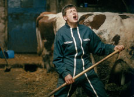

|
L'APPRENTI
THE APPRENTICE
Samuel Collardey | F 2008 | 85 min.
Material: 35mm
Format: 35mm
Original language: French
Script: Samuel Collardey, Catherine Paille
Camera: Samuel Collardey, Charles Wilhelem
Sound: Vincent Verdoux, Julien Roig
Editing: Julien Lacheray
With Matthieu Bulle, Paul Barbier
Production: Grégoire Debailly, Michel Reihlac
Print/Sales: Lazennec
www.lapprenti-lefilm.com
Best First Film, Prix Louis Delluc 2008 | Mention spéciale et Prix de la Semaine de la Critique Cannes 2008
The French have a particular talent for creating works on the boundary between fiction and documentary that effectively capture the sights, sounds, and rhythms of life occasionally dropped by the artifice of cinema. Samuel Collardey film follows Laurent Cantet's THE CLASS in this tradition with the story of 15-year-old student Mathieu (Mathieu Bulle), who lives and works as an apprentice on a family-run dairy farm high on the plateau in the Doubs region. He develops a warm, close relationship with farm owner Paul (Paul Barbier) that provides a partial refuge from the emotional chaos of his parent's failed marriage.
Samuel Collardey has been the director of photography on more than 10 short and feature films. He was born and raised in the Haut-Doubs region of France — the setting for his directorial debut, THE APPRENTICE. Collardey worked for French television before enrolling at La Fémis, the French national film school. His thesis film, DU SOLEIL EN HIVER, screened at the 2005 Director’s Fortnight at Cannes.
Films: Du soleil en hiver 2005 | L'apprenti 2008
back
|